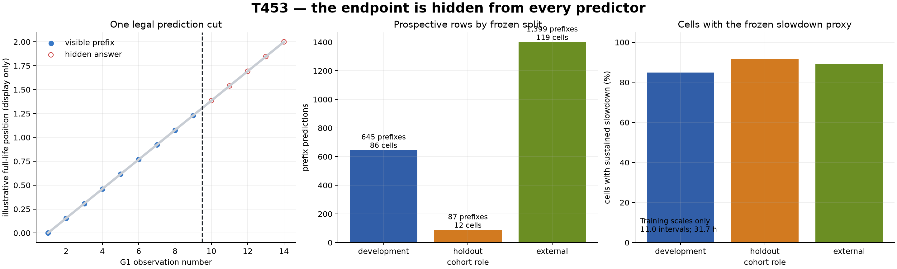
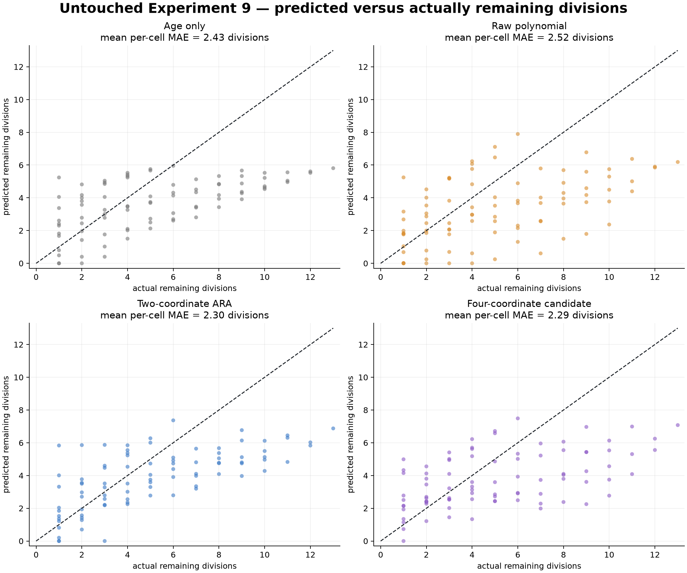
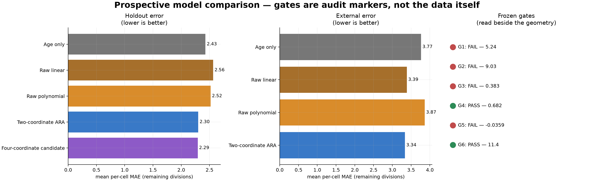
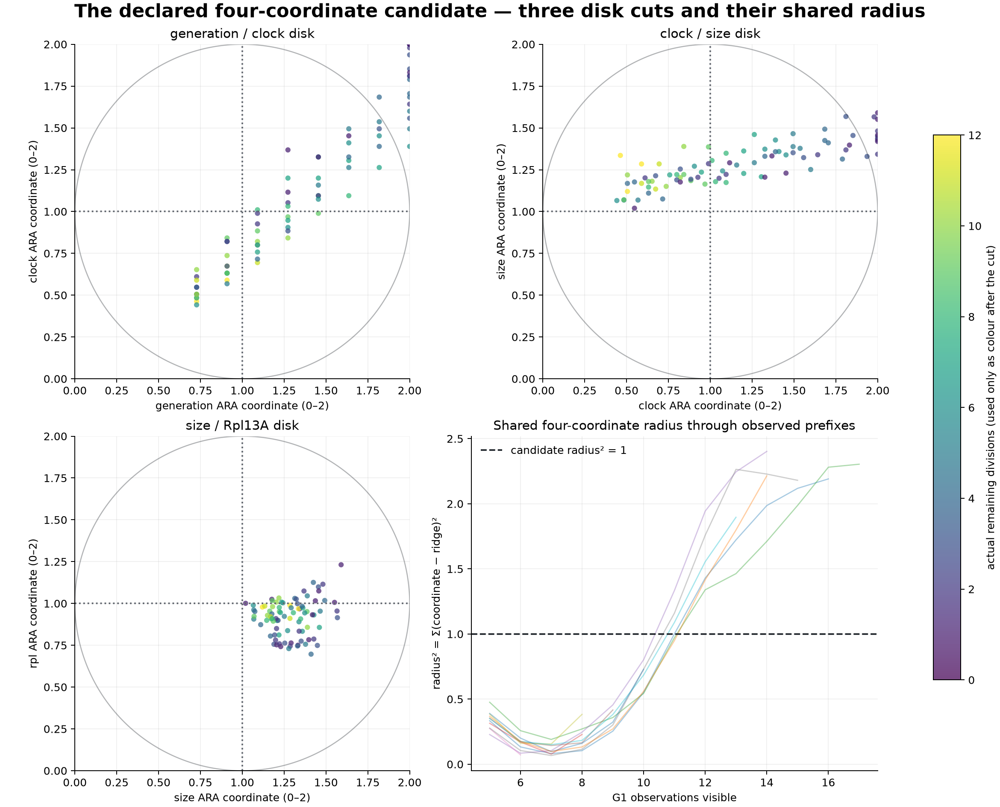
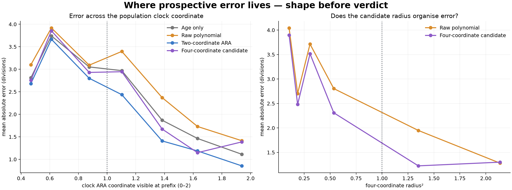
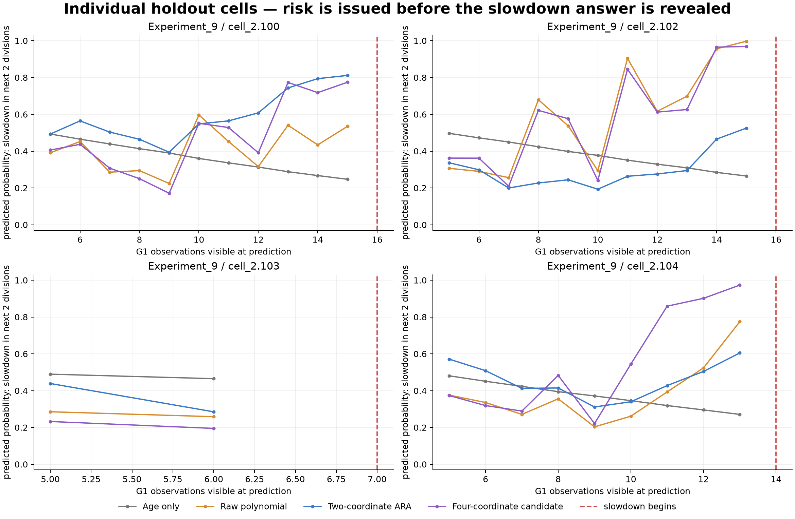

ARA test T453 · frozen prospective analysis
Did we find more than a redrawing of lifespan?
Yes, a little—but not yet a hidden Time wave. Prefix-only ARA variables carry some information about the unseen remainder of a yeast cell's observed life. The four-coordinate candidate improves one holdout comparison, but it barely differs from the two-coordinate ARA and does not improve the slowdown event. The visible “sphere radius” is still dominated by generation and clock.
What was testedPrediction4D candidateSlowdownVerdict
Answer first
The precise conclusion: this is not merely a completed-lifespan inversion, because the future endpoint was unavailable to every predictor and the two-coordinate ARA improved on age in both holdouts. But the fourth-coordinate result is not an independent sphere discovery: it improves the raw polynomial by 9.0%, misses its 10% gate, differs from two-coordinate ARA by only 0.4%, and loses to the raw polynomial on slowdown AUROC.
1. The test boundary
Who: 217 usable cellsWhat: timestamp, size, Rpl13AWhen: prefix onlyWhere: frozen experiment splits
The original source contains 225 cells. Eight were too short to supply the required five-G1 prefix plus an unseen future, leaving 86 development cells, 12 untouched same-platform cells, and 119 external-platform cells.

How to read it: blue observations are legally visible. Hollow red observations are the answer and cannot enter a predictor. The right panel shows how often the fixed sustained-slowdown proxy exists; it is not a death label.
2. Can the visible prefix predict the unseen remainder?

Each dot is one legal prefix prediction. The dashed diagonal is perfect prediction. All models compress long remaining lifespans toward the middle, so the task remains difficult. The ARA models reduce error modestly; they do not solve individual lifespan.

The gates preserve honesty, but the bars show the actual geometry of the result. On Experiment 9, two-coordinate ARA is 5.2% better than age; the four-coordinate candidate is only 0.4% better than that ARA model. On the much larger external transfer, two-coordinate ARA is 11.4% better than age.
Untouched Experiment 9
| model | mean per-cell MAE | RMSE | bias |
|---|---|---|---|
| Age only | 2.428 | 3.032 | -1.539 |
| Raw linear | 2.565 | 3.120 | -1.700 |
| Raw polynomial | 2.519 | 3.369 | -1.846 |
| Two-coordinate ARA | 2.301 | 2.749 | -1.271 |
| Four-coordinate candidate | 2.292 | 3.098 | -1.381 |
External Experiments 1–6
| model | mean per-cell MAE | RMSE | bias |
|---|---|---|---|
| Age only | 3.767 | 5.589 | -0.890 |
| Raw linear | 3.388 | 5.313 | -1.780 |
| Raw polynomial | 3.866 | 5.152 | 0.088 |
| Two-coordinate ARA | 3.337 | 5.235 | -2.008 |
Robustness: the four-coordinate candidate's mean MAE gain over the raw polynomial is 0.228 divisions, with a cell-cluster bootstrap interval [0.072, 0.410]. The external two-coordinate gain over age is 0.430 divisions, interval [0.299, 0.568]. The 12-cell same-platform result is still small-sample evidence.
3. What the “4D sphere” candidate actually did
Four independent observed quantities were mapped to 0–2 coordinates: generation, elapsed clock, cell size, and Rpl13A concentration. Three two-dimensional disk cuts were then inspected, and their four ridge-centred components were summed into a shared radius². This is the proposed projection test—not an assumption that a physical S³ has already been found.

Generation/clock: a strong diagonal maturity path. Clock/size: size rises gradually while clock traverses. Size/Rpl13A: a compact near-ridge child cloud. Shared radius: long-lived cells move outward and often cross radius² = 1 around G1 11.
This directly addresses the concern: the radius is mostly modelling lifespan position. Only six holdout cells cross it, and they still have a median 4.5 divisions remaining. Size and Rpl13A bend the path enough to help prediction against the raw control, but they do not presently supply a common terminal boundary.

The four-coordinate candidate is most helpful relative to the raw polynomial through the middle radii, but two-coordinate ARA is often equally good or better. That is why this run supports a prospective relational signal without identifying a distinct fourth-dimensional object.
4. Does it foresee a local handover?
The fixed event is the first pair of consecutive intervals more than 1.25× the cell's first-three-interval median. The model asks, before seeing it, whether that slowdown begins within the next two divisions.

The red line is revealed only after prediction. Some cells show a rising ARA or four-coordinate risk before the line; others do not. These are probabilities, not exact death forecasts.
| model | AUROC | Brier | positive prefixes | negative prefixes |
|---|---|---|---|---|
| Age only | 0.434 | 0.246 | 20 | 39 |
| Raw linear | 0.551 | 0.234 | 20 | 39 |
| Raw polynomial | 0.718 | 0.205 | 20 | 39 |
| Two-coordinate ARA | 0.682 | 0.211 | 20 | 39 |
| Four-coordinate candidate | 0.682 | 0.216 | 20 | 39 |
Event result: age alone is below chance (AUROC 0.434); two-coordinate ARA reaches 0.682; the raw polynomial is best at 0.718; and the four-coordinate candidate returns 0.682. Therefore the fourth-coordinate construction does not add the missing handover information in this cut.
5. ARA-grounded verdict
What is supported
- A prefix-only relational construction carries some prospective information about the unseen observed remainder.
- The two-coordinate generation/clock ARA transfers across a different experimental platform for remaining divisions.
- Size and Rpl13A create visible additional cuts and slightly improve one matched holdout comparison.
What is not supported yet
- A universal death ridge or common termination crossing.
- A four-coordinate advantage over the already-working two-coordinate ARA.
- A four-dimensional sphere, S³ topology, or “Time itself.”
- Precise individual lifespan prediction; errors remain roughly 2.3 divisions on Experiment 9 and 3.3 divisions externally.
Best next test: preserve this exact prefix-only design but add genuinely time-facing children measured in the same individual cells—preferably damage/repair, mitochondrial state, or another independent internal process. The new coordinate must beat both two-coordinate ARA and a matched raw nonlinear model. Merely adding more lifespan-correlated measurements would enlarge the same visible disk without locating the hidden direction.
Files and traceability
The frozen method is in FROZEN_PROTOCOL.md. Raw prefix states, predictions, all metrics, bootstrap intervals, gates, and four-coordinate landmarks are beside this report as CSV/JSON files. The source is the published S1 workbook materialised in T451 and parsed through T452's raw-unit tables.
Source paper: The Natural Variation in Lifespans of Single Yeast Cells Is Related to Variation in Cell Size, Ribosomal Protein, and Division Time.